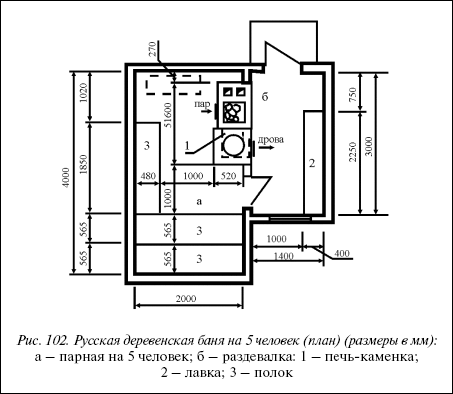
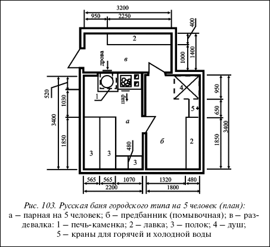
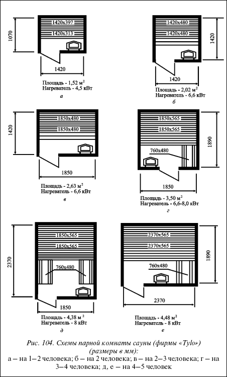
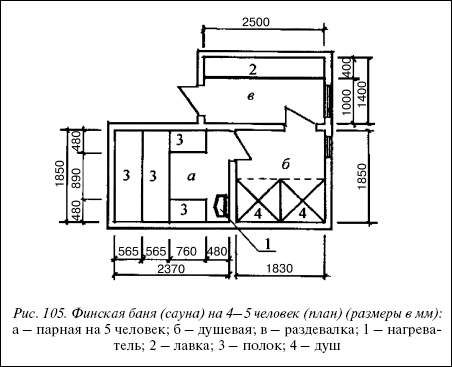

Баня.
 Общие положения
Общие положения
Несмотря на довольно большое количество разных типов бань, получивших признания в других странах мира, в России наибольшее распространение получили русская и финская бани.
Помещения в парной бани имеют особые температурно-влажностные характеристики:
• для русской бани влажность 65–70 % при температуре 45–65 °C;
• для финской бани (сауны) влажность 5-35 % при температуре 70-110 °C.
Поэтому требования к ограждающим конструкциям бань существенно отличаются от требований к обычным помещениям. Стены помещений бани должны быть значительно толще и иметь специальные включения, обеспечивающие необходимые требования к тепло– и паропроницанию. Перекрытия должны иметь усиленную пароизоляцию и более толстый слой теплоизоляции.
На заметку
Очень часто без необходимого обоснования и обеспечения перечисленных выше требований баню размещают в подвальных и цокольных помещениях жилого здания.
Влажный воздух (пар) при этом проникает в конструкции и вышерасположенные помещения и там конденсируется за счет разности температур и влажности. Это приводит к значительному ухудшению санитарно-гигиенических условий в вышерасположенных помещениях (тяжелый воздух, мокрые углы) и быстрому разрушению конструкций здания.
Поэтому наиболее оптимальным решением является размещение бани в отдельно стоящем или пристроенном блоке.
Несколько десятилетий назад в целях экономии в стране было разрешено устройство совмещенных с кровлей перекрытий даже над влажными помещениями, включая бани.
Практика эксплуатации таких помещений показала порочность этого решения, несмотря на мнимую «экономию», так как через некоторое время утеплитель насыщался влагой за счет конденсата от проникновения пара, а отсутствие проветривания не позволяло утеплителю высыхать. Все это приводило к резкому ухудшению теплотехнических свойств увлажненного утеплителя, как следствие, к нарушению температурно-влажностного режима помещения и в дальнейшем к разрушению конструкций здания. При устройстве чердака, где постоянно идет циркуляция воздуха, эти минусы отсутствуют. Кроме того, при чердачном варианте кровли легко контролировать состояние утеплителя и крыши. Учитывая изложенное, совмещенную кровлю над банями делать не следует, необходимо устройство чердака. Уровень пола помещений бани обычно принимается на 45–60 см выше уровня отмостки.
Инженерное обеспечение бани, расположенной на усадьбе, может быть:
централизованное:
• водоснабжение – от уличного хозяйственно-питьевого водопровода;
• канализация – в хозяйственно-бытовую уличную сеть;
• отопление и горячее водоснабжение – от теплового агрегата жилого здания; автономное:
• водоснабжение – от бака, установленного в бане. Бак периодически надо наполнять водой;
• канализация – на рельеф;
• отопление – печное;
• горячее водоснабжение – от бака, установленного на печи. Особый разговор об электроснабжении влажных помещений бани: напряжение в сети этих помещений должно быть 12 В, т. е. на вводе электролинии необходимо установить понижающий трансформатор 200–240/12 В. Все приборы (светильники, выключатели, розетки) должны быть во влагозащищенном исполнении, выключатели и розетки во влажных помещениях (парная, предбанник) устанавливать нельзя, их надо размещать в помещении с нормальной влажностью (раздевалка).
Материал стен бани:
• кирпич глиняный, обязательно полнотелый (пустотелый, дырчатый, щелевой кирпич для влажных помещений запрещен, так как он накапливает влагу);
• деревянный брус, бревно. Чердачное перекрытие деревянное.
Русская баняРусская баня состоит, как правило, из следующих помещений:
• парная, оборудованная деревянным полоком и печью с каменкой. Площадь помещения определяется исходя из условного норматива – 1 м на 1 человека и набора оборудования. Высота помещения от пола до потолка составляет 2,0–2,1 м;
• предбанник (помывочная), оборудованный скамейкой для мытья, раздаточным краном холодной и горячей воды и душем. При желании здесь же может быть установлен мини-бассейн с оптимальными размерами 2,0х2,0х1,6 h м. Площадь помещения рассчитывается исходя из количества людей, определенных для парной, и набора оборудования. Высота помещения от пола до потолка составляет 2,1 м;
• раздевалка должна иметь то количество мест для раздевания людей, которое установлено для парной. Если раздевалка совмещается с комнатой отдыха, то ее площадь соответственно увеличивается с учетом мест для отдыха, размещения стойки бара, установки телевизора и т. п. Высота помещения от пола до потолка составляет 2,5 м. Полок в парной составляется из деревянных лавок шириной 48,0 и 56,5 см, длиной от 171,0 до 237,0 см (уточняется по месту) и высотой 41,0 см.
Совет
Для удобства вдоль лавок целесообразно установить спинки той же длины, что и лавки, и высотой 27 см. Доски для лавок и спинок необходимо тщательно отстругать.
Скамейка для мытья в предбаннике должна отвечать тем же требованиям, что и лавки для парной.
К дверям парной предъявляются повышенные требования:
• не должны открываться вовнутрь;
• должны выдерживать перепад температуры внутри и снаружи парной;
• должны плотно закрываться для сохранения тепла;
• рекомендуемый размер дверей для парной: 185x63 см, 185x71,5 см (размер двери включает размер наружной рамы).
Парная должна быть оснащена бадьей и черпаком для подливания воды на каменку, а также термометром. В русской бане принято парение с веником (березовым, дубовым и т. п.). Печи, устанавливаемые в парной, должны быть оборудованы каменкой и баком для подогрева воды.

Рис. 102. Русская деревенская баня на 5 человек (план) (размеры в мм):а – парная на 5 человек; б – раздевалка: 1 – печь-каменка; 2 – лавка; 3 – полок
Камни для каменки должны выдерживать сильное нагревание и быстрое охлаждение без растрескивания (порода типа диабаз). Печь надо расположить таким образом, чтобы обеспечить доступ к топке со стороны раздевалки. Для создания пара в парной воду из бадьи выплескивают черпаком на сильно разогретые камни каменки. После окончания процесса мытья парную надо проверить (открыть дверь или включить вентилятор).
Русскую баню можно разделить на два типа:
• деревенская;
• городского типа.

Рис. 103. Русская баня городского типа на 5 человек (план):а – парная на 5 человек; б – предбанник (помывочная); в – раздевалка: 1 – печь-каменка; 2 – лавка; 3 – полок; 4 – душ; 5 – краны для горячей и холодной воды
Деревенская русская баня (рис. 102)размещается, как правило, в дальнем конце усадьбы на возвышенном месте, желательно на берегу водоема, с возможностью отвода стоков по рельефу.
Деревенская баня состоит из парной, совмещенной с помывочной (т. е. в одном помещении и парятся, и моются) и раздевалки.
Инженерное обеспечение – автономное.
Русская баня городского типа (рис. 103)размещается, как правило, вблизи жилого дома или приблокируется к нему. Блокировка бани к жилому дому удешевляет стоимость строительства за счет сокращения затрат на инженерные коммуникации и уменьшения объема стен.
Баня городского типа состоит:
• из парной;
• предбанника (помывочной);
• раздевалки (комнаты отдыха).
Инженерное обеспечение – централизованное.
Финская баня (сауна)Сауна должна быть рассчитана на то, чтобы выдерживать как исключительно сухой, так и исключительно влажный климат. Это значит, что в сауне может создаваться экстремальный климат, начиная от сухого с высокой температурой выше 90 °C при влажности ниже 10 % и до влажного с температурой в парной выше 45 °C при влажности в 65 % (для парения по принципу русской парной).
Дерево, используемое для внутренней отделки саун:
• ель – светлое дерево, используемое для стен и потолка. У дерева здоровые сучки и нейтральный запах, незначительное выделение смолы;
• сосна – ароматное дерево, богатое сучками и смолой. Поверхность гладкая и красивая, приятно стареет. Используется для стен и потолка;
• кедр – ароматное и красивое многоцветное ценное дерево, без сучков и смолы. Подходит для стен и потолка;
• осина – лучший материал для отделки саун (стен, потолков, лавок, спинок, подлокотников). Древесина без сучков. Обладает высокой сопротивляемостью влаге, имеет приятный аромат.
Для сохранения первоначальной свежести рекомендуется обработать поверхности:
• олифой несколько раз – порог, ступеньки, деревянный настил и возвышение пола;
• маслом – лавки сауны, спинки, подлокотники и декоративные межскамеечные панели. Для этой цели используется специальное масло для саун типа «Tylo Bastuolja» шведского производства.
Обстановка парной способствует тому, чтобы купание доставило удовольствие. Используя простые средства, можно создать в парной уют.
Например, установить подлокотники и декоративные карнизы между лавками и между полом и лавками. Спинка на лавке и подлокотники способствуют лучшему отдыху. Подлокотники, сиденья и спинки лавок должны быть выполнены из гладких мягко закругленных досок. На пол парной можно уложить настил.
Лавки парной имеют ширину от 31,3 до 56,5 см, длину от 76,0 до 237,0 см (уточняется по месту)
и высоту 41,0 см. Спинки имеют высоту 27,0 см. Освещение в парной очень важно, оно должно создавать уют и в то же время быть таким, чтобы можно было в парной читать газету.
Неотъемлемыми атрибутами парной являются бадья, черпак для подливания воды и термометр.
Важно не забыть про березовые веники, для чего надо заблаговременно заготовить несколько штук. Хранятся веники в сухом и теплом месте, их можно также заморозить в целлофановом кульке.
Для ароматизации пара можно использовать ароматные травы или жидкую эссенцию.
На двери парной не должно быть замка, она не должна открываться на так называемых «самозакрывающихся петлях» и должна легко открываться. Двери парной выдерживают разницу в температуре внутри и снаружи парной для предотвращения потери тепла плотно прилегают к наружной раме. Двери, как правило, имеют размеры 185x63 и 185x71,5 см (размеры указаны по наружной коробке).
Микроклимат в парных комнатах саун обеспечивается специальными нагревательными агрегатами для приготовления пара, которые должны отвечать следующим требованиям:
• использование высококачественных материалов;
• надежность и экономичность нагревательных элементов;
• быстрое нагревание (за 20 мин до 80 °C);
• равномерный нагрев;
• эффективное парообразование;
• правильное сочетание между теплоотдачей и количеством камней для парообразования;
• встроенные в агрегат дополнения (датчик температуры, увлажнитель воздуха, направление потока воздуха и предохранительный клапан от перенагревания);
• защитная панель (температура на передней и боковых сторонах агрегата не должна превышать 40 °C);
• агрегаты должны работать на электроэнергии от электросети напряжением 220–380 В;
• оснащение пультом управления как встроенным, так и выносным. Время включения нагревателя устанавливается за 0–9 ч до начала работы на 3 ч непрерывной работы (можно затем продлить). Он выключается автоматически или вручную;
• чем больше мощность агрегата соответствует величине помещения, тем меньшим будет потребление электроэнергии. Больше мощность – это более быстрое нагревание и меньшее потребление электроэнергии;
• для получения пара на агрегат укладываются камни (типа диабаз), выдерживающие сильное нагревание и быстрое охлаждение.
Для строительства в усадьбах используется, как правило, сауна на 1–5 человек с нагревательным агрегатом мощностью 4,5–8,0 кВт (схемы парных комнат приведены на рис. 104).
Нагреватели, выпускаемые для традиционной парной, могут создавать следующие условия для парения:
• мокрый пар, т. е. с подливанием воды на камни (температура в помещении 75–90 °C при влажности 20–35 %);
• сухой пар, т. е. без подливания воды на камни (температура в помещении выше 90 °C при влажности 5-10 %). В настоящее время выпускаются нагреватели шведского, финского, российского и т. д. производства как с встроенной, так и с выносной панелью управления.
В последнее время шведская фирма «Tylo» выпустила нагреватель «Tylo Combi» мощностью 6,6–8,0 кВт, с расширенным диапазоном условий парения, который помимо уже перечисленных традиционных условий для парения создает дополнительные условия для парения в мокром паре с температурой 45–65 °C и постоянным или пульсирующим паровыделением при влажности 65 %. В любое время можно поменять условия парения или же добавить ароматные специи, т. е. этот агрегат позволяет в одном и том же помещении парной создать условия парения как в финской, так и в русской бане.
Финская баня (сауна) состоит, как правило, из следующих помещений:
• парная комната, оборудованная деревянными лавками и нагревателем для приготовления пара (см. схемы парной комнаты на рис. 105);
• помывочная (душевая), оборудованная душем с холодной и горячей водой. При желании здесь может быть установлен мини-бассейн с оптимальными размерами 2,0х2,0х1,6 м. Площадь помещения рассчитывается исходя из количества людей, определенных для парной комнаты. Высота помещения от пола до потолка составляет 1,90– 2,05 м;

Рис. 104. Схемы парной комнаты сауны (фирмы «Tylo») (размеры в мм):
а – на 1–2 человека; б – на 2 человека; в – на 2–3 человека; г – на 3–4 человека; д, е – на 4–5 человек
• раздевалка (комната отдыха) должна иметь то же количество мест для раздевания людей, которое определено для парной. Площадь помещения устанавливается исходя из поставленных условий (это только раздевалка или комната отдыха). Высота помещения от пола до потолка составляет 2,5 м;
• парная комната и помывочная должны быть оборудованы деревянными вентиляционными решетками с задвижками для регулирования подачи свежего воздуха и проветривания помещений.
Инженерное обеспечение финской бани, как правило, централизованное.
В качестве примера приведена планировка финской бани (сауны) на 4–5 человек (рис. 105).
Искусство наслаждения парнойТрадиционное парение (сухим и мокрым паром).
Перед парной следует обязательно вымыться в душе. Возьмите с собой полотенце в парную, чтобы сидеть на нем. Подливая время от времени воду на камни, вы почувствуете, как теплый пар вибрирует в воздухе, массируя тело.
Когда вы хорошо пропотели, пора еще раз выкупаться в душе. Поры кожи уже достаточно открыты, и вы будете чисты даже внутри. Можно наслаждаться парением подольше, до тех пор, пока вам это приятно. Время от времени можете освежаться в душе. В конце парения подливайте воду интенсивнее. После парной отдохните, освежите себя холодным напитком и обратите внимание на то, как хорошо вы себя чувствуете.

Рис. 105. Финская баня (сауна) на 4–5 человек (план) (размеры в мм):а – парная на 5 человек; б – душевая; в – раздевалка; 1 – нагреватель; 2 – лавка; 3 – полок; 4 – душ
Парение в мокром паре должно проходить при температуре 75–90 °C и влажности 20–35 %. Если вы предпочитаете сухой пар без подливания воды, то влажность воздуха должна быть 5-10 % и температура может быть несколько выше 9 °C.
Мокрый пар и добавление ароматных трав обеспечивает агрегат «Tylo Combi».
Этот более мягкий вариант парения проходит при температуре 45–65 С с постоянной подачей пара при относительной влажности 40–65 %. Мягкий и приятный климат приглашает к долгому парению.